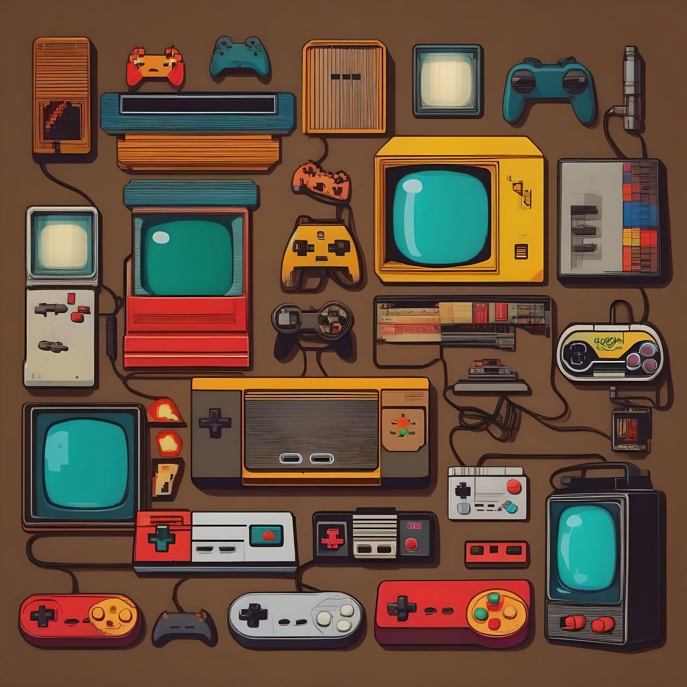

Qu'est-ce que le rétrogaming ?
Le rétrogaming est bien plus qu'un simple passe-temps. C'est une véritable passion qui vous invite à redécouvrir les jeux vidéo d'antan sur des consoles et des ordinateurs d'époque. Plongez dans une nostalgie vibrante et voyagez dans l'histoire du jeu vidéo, à la rencontre des pixels qui ont façonné notre univers numérique.

Pourquoi jouer à des jeux vidéo rétro ?
- Nostalgie: Ressaisissez les émotions intenses de votre enfance en rejouant aux jeux qui vous ont marqué. Laissez-vous transporter par des souvenirs inoubliables et retombez en amour avec les personnages et les univers qui ont bercé votre jeunesse.
- Découverte: Explorez un pan entier de l'histoire du jeu vidéo et exhumez des trésors cachés. Des jeux vidéo que vous n'avez jamais eus l'occasion de découvrir vous attendent, remplis de surprises et d'innovations oubliées.
- Challenge: Relevez les défis des jeux vidéo d'antan, souvent plus difficiles et exigeants que les jeux modernes. Affrontez des ennemis redoutables, déjouez des pièges diaboliques et savourez la satisfaction de surmonter des obstacles ardus.
- Collection: Constituez une collection unique de consoles et de jeux vidéo rétro. Devenez un véritable chasseur de trésors et exhumez des pièces rares et convoitées, construisant ainsi un musée personnel de l'histoire du jeu vidéo.
- Communauté: Rejoignez une communauté vibrante et passionnée de rétrogaming. Partagez vos expériences, vos découvertes et vos astuces avec des joueurs du monde entier. Participez à des événements et des forums dédiés, et tissez des liens durables avec des amis partageant votre passion.
Comment jouer à des jeux vidéo rétro ?
- Consoles d'origine: Achetez des consoles d'époque et des jeux vidéo d'occasion.
- Émulation: Utilisez un logiciel d'émulation pour jouer à des jeux vidéo rétro sur votre ordinateur ou votre smartphone.
- Mini consoles: Jouez à une sélection de jeux vidéo rétro sur des consoles miniatures.
- Jeux réédités: Certains jeux vidéo rétro sont réédités sur des consoles modernes.